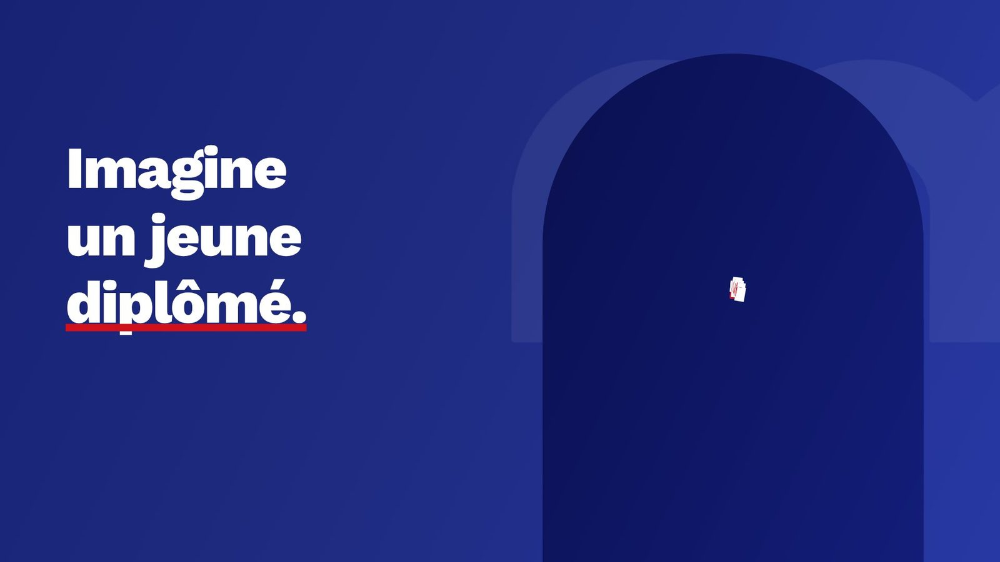

NEXORA
Nous faisons bouger les marques.

Nous faisons bouger les marques.
NEXORA est un studio créatif basé à Cotonou. Nous concevons des vidéos en motion design et des sites web pour les institutions, les entreprises et les marques qui doivent être comprises vite, et retenues longtemps.
Réalisations 2026. Les pages suivantes montrent des images tirées des vidéos livrées.
Institut National de la Femme (INF) · Bénin · 2026
Une vidéo d’animation pour faire connaître l’accompagnement des femmes victimes de violences : le numéro 114, l’écoute, l’orientation et la défense en justice.


Mara Academy · 2026
La vidéo de présentation d’une académie de formation et de ses deux programmes, YEA et SHIFT, écrite d’après le script du client : une histoire d’abord, puis l’offre.
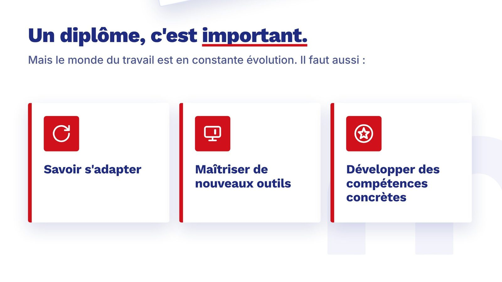
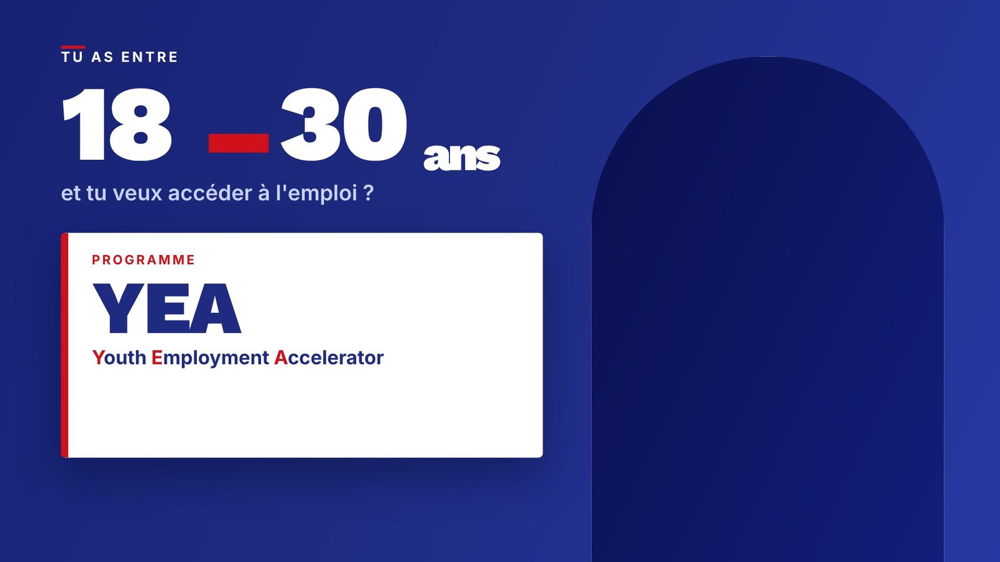

Centre National de Sécurité Routière (CNSR) · Bénin · 2026
Une vidéo verticale pour les réseaux sociaux : cinq règles à retenir, de vraies photos de nos routes, des pictogrammes animés et des sous-titres mot à mot.
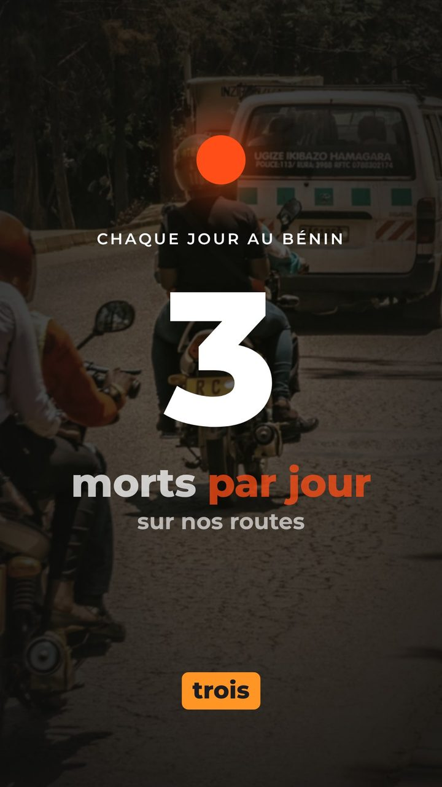
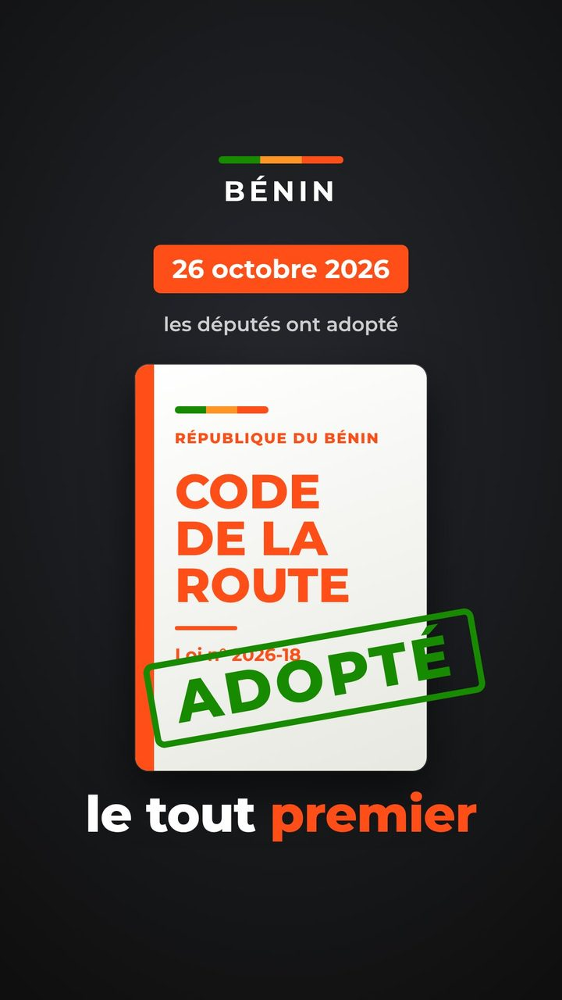
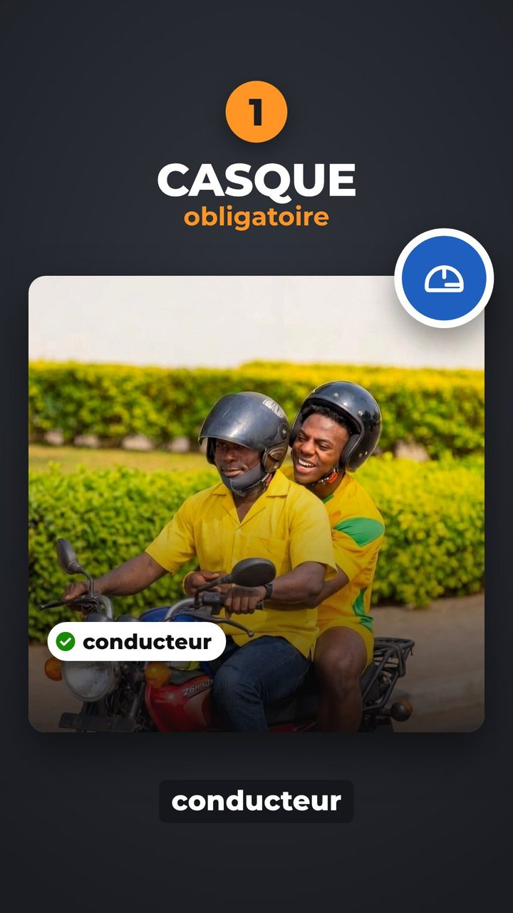

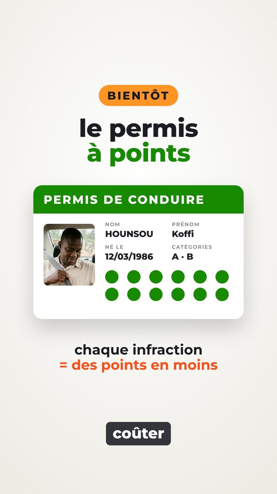
SIN NUNU · Abomey-Calavi · 2026
La vidéo de marque d’une eau minérale béninoise : l’ambition, les trois formats et la promesse, entre animation et photographies du produit.


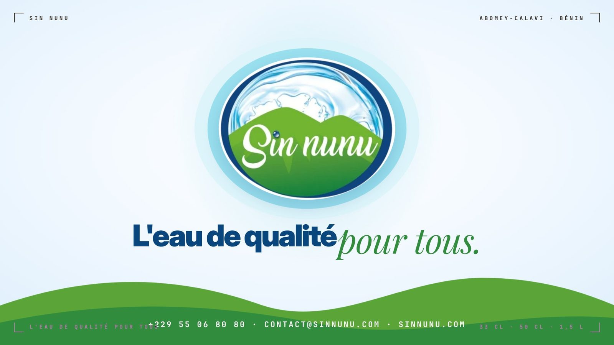
Blue’Ston Connect · Bénin · 2026
La vidéo de lancement d’une carte de visite intelligente (NFC et QR code) : le problème, le geste, les fonctions, les offres. Une version horizontale et une version courte verticale.

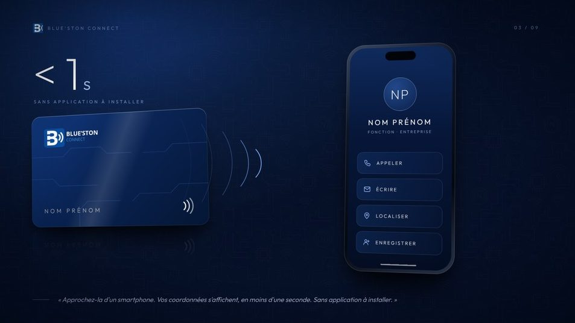
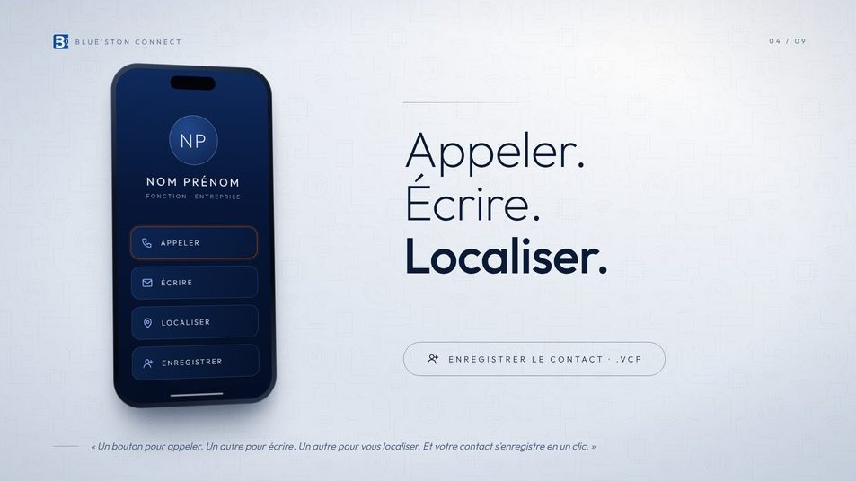
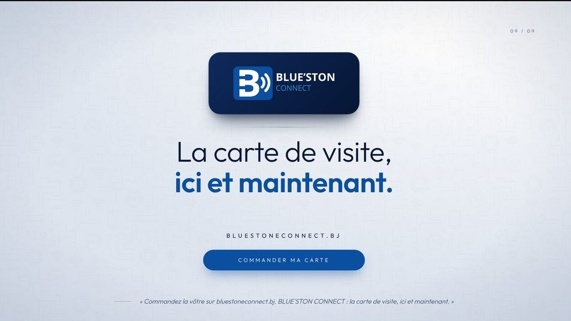
Flore Djinou · 2026
Une série de vidéos verticales pour les réseaux sociaux, à l’occasion des 16 jours d’activisme contre les violences faites aux femmes et aux filles : prise de parole face caméra, habillage animé aux couleurs de sa marque, sous-titres mot à mot.
NEXORA · Notre propre site · 2026
Notre site de studio : une sculpture 3D animée en temps réel à l’ouverture, des sections qui réagissent au défilement, une version mobile pensée à part. Conçu et développé par l’équipe.
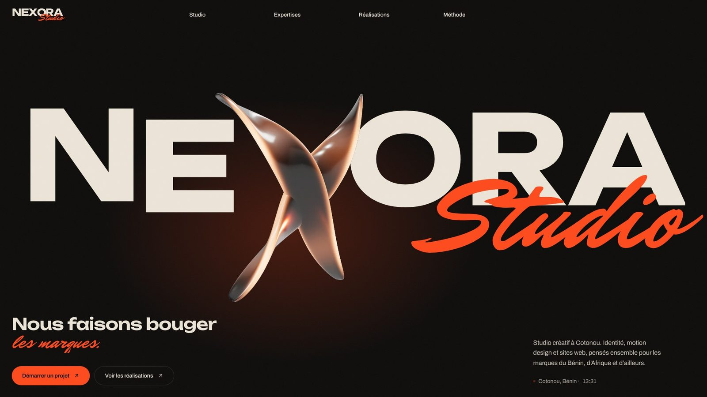


AGIS Concept · Cotonou et Parakou · en cours
Direction artistique et maquette interactive du site d’un bureau d’études (architecture, urbanisme, ingénierie) : un bâtiment en 3D à l’ouverture, des expertises claires et une demande de devis toujours à portée de main.

Le prix suit le travail, pas la durée : écriture, storyboard, illustrations, complexité de l’animation, son et formats. Deux séries de retours incluses, trois pour la vidéo promotionnelle et la vidéo explicative.
Prix en FCFA, hors TVA éventuelle. Voix off au coût réel. Au-delà de 90 s, le devis s’ajuste à la durée et aux illustrations.
Maquette sur mesure, adaptée au mobile, mise en ligne et suivie. Deux séries de retours sur la maquette et une sur l’intégration.
Engagement de six mois. Paiement annuel : dix mois facturés.